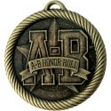

Muhammad Arbi
7210 North Rogers Ave
Chicago, Illinois 60645
(773)-349-5992
Roald Amundsen HS, class 2021 (4.6 GPA)
High School Diploma & IB (International Baccalaureate) Diploma
Pursuing Undergraduate Degree in ITM at Illinois Institute of Technology
Arrive everyday after school in order to participate for 2 hours
Mentor school aged children with various lessons
Actively participate in all activities and responsibilities of children
Participate in being a cashier helping customers with their purchases
Helped take care of customers through various means such as with questions,management, and previous knowledge.
Participated in the cleanliness of the store by actively picking up trash or emptying garbage bins
Created engaging and educational games for children.
Consistently ensured children were fed, bathed, and put to bed before parents returned home.
Assisted children with school homework, assigned reading, and other activities.
Prepared and provided healthy meals, snacks, and beverages to children.
Skilled in rebuilding computers
Thorough understanding of social media platforms (Twitter, Tik Tok, Instagram, Snapchat)
Skilled in website troubleshooting
Skilled in repairing hard drives
Led public discussions about relevant global issues.
Paid close attention to details and studied debate tactics.
Successfully worked with a team to accomplish a common goal.
Developed competency and confidence in public speaking.
Faizen-e-Madinah (June 2015 - present)
CAS (Creativity, Activity, and Service) program- Assisted with clean up of litter withinthe community.
A & B honor roll, 4 quarters
Trophy for 2nd and 3rd place in Debate Tournaments
Speaker awards for 4th and 10th place in Debate Tournaments
Monica J. Martinez
College Access Coordinator, GEAR UP Chicago
Phone:312-945-6466
M-Jimenez2@neiu.edu